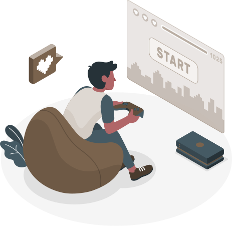

Recipe Book
An Android app made in React Native. Created for the purpose of keeping track of recipes in one place. Inspired by an old and beat-up recipe book kept by my mother.
Philip Dometita
I am a Calgary-born computer science graduate from the University of Calgary with a concentration in Human-Computer Interactions. I graduated in May 2021 with distinction and a 3.62 GPA.

Illustration by: yurkaimmortal
During my degree, I worked mostly in Java and Python, with some experience in C++ and SQL (PostgreSQL and MySQL). My main interest is in the visual and interactive side of programming, so I have been studying UI/UX design and web development since finishing my degree. I have been studying HTML5, CSS, and JavaScript for building websites. I have experimented with JS frameworks such as React for web apps and React Native for natively rendered mobile apps.

Mobile illustration by storyset
Having grown up during a period of time where technology was advancing at an exponential rate, tech innovations have always been interesting to me. As someone who has always had video games as a way to pass time, hang out with friends, or experience a story, the innovations in technology as it pertains to video games have always been clear to me. Graphics, storage space and speed, UI design, and other innovations have been amazing to witness firsthand. Whether it be programming, phones, or computers, I am excited to see where technology goes in the future.
Devices illustration by storyset
An Android app made in React Native. Created for the purpose of keeping track of recipes in one place. Inspired by an old and beat-up recipe book kept by my mother.
A simple Python program that is used to manage modification files for the game Monster Hunter: Rise, making adding and removing mods less painful.
A web portfolio made in HTML5, SCSS, and vanilla JavaScript to showcase who I am and projects I have worked on.